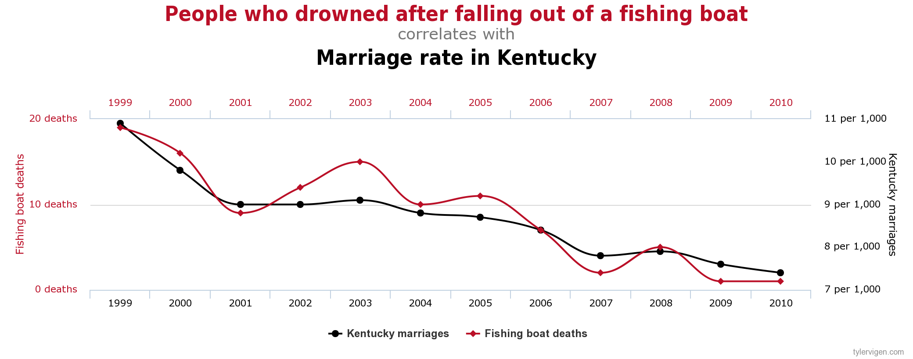

What is correlation used for?
It is used to describe the linear relationship between two quantitative variable. From the correlation, we can know the strength and the direction of the relationship between those two variables.
What is the difference between correlation and causation?
Causation means there is a casue and effect relationship that the change in one variable can cause the change of another. The occurance of causation might suggest a correlation, but a correlation does not mean there is a causation because the correlation is just simply indicating the relationship between two.
An example to see a correlation doesn't imply a causation.

Smoothers with the scatter plot: can give us a basic outlook of the trend of the data and the relationship between two variables as creating a line through. However, the smoother is not accurate.
Matrices and Parallel coordinate plots: which will be easier for us to compare between different sections, but will be hard to tell the correlation within the section if there are a lot of data.
Regression:the linear least suqare recession can help us not only to see the relationship between the two variables by showing the change of the dependent variable when the independent variable changes by 1 unit, but also to estimate the value that is included in the data. It is more accurate than the smoother, but it can not compare with other like the matrices and pareller coordinate plot does.